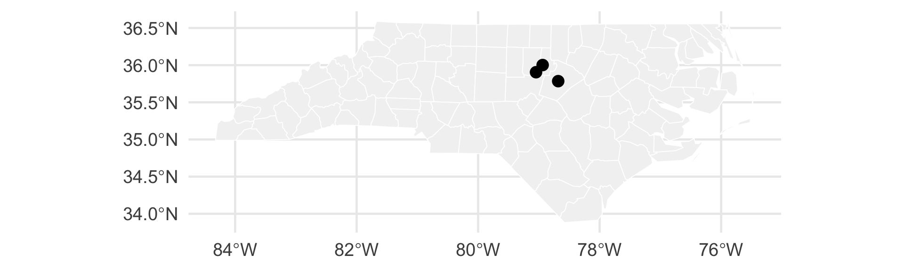

For a polygon map, aes(fill = variable) creates a choropleth.
Tip
Map rates, not raw counts: bigger counties produce bigger counts. And beware: counties with few births have noisy rates, so the most extreme colors are often the smallest counties.
crs = 4326 is the code for plain GPS longitude/latitude (WGS 84), which is what most web and phone data use. Once converted, spatial layers stack like ordinary ggplot2 layers:
ggplot(nc) +geom_sf(fill ="gray95", color ="white") +geom_sf(data = places_sf, size =4)

The most common CRS mistake
Warning
Do not treat longitude/latitude degrees as ordinary distances. One degree of longitude is about 56 miles in Durham, but 0 miles at the North Pole.
For distances, areas, and buffers, transform to a suitable projected CRS first:
nc_projected <- nc |>st_transform(2264) # NAD83 / North Carolina, units = US feet
Function
Meaning
st_set_crs()
label coordinates that are already in a CRS (numbers unchanged)
st_transform()
convert coordinates to another CRS (numbers change)
Wrangling spatial data with dplyr
Most dplyr verbs work on sf objects, and the geometry comes along for the ride.
Spatial bugs are usually data representation bugs, not syntax bugs. When something fails or looks strange:
Are both objects sf objects?
Do they have the same CRS?
Am I measuring distance or area in a projected CRS?
Are the geometries valid?
Did a spatial join create one-to-many matches?
Am I mapping a count when I need a rate?
st_crs(x) # what coordinate system?st_geometry_type(x) # points, lines, polygons?st_is_valid(x) # any broken shapes?st_bbox(x) # does the extent look like the right place?ggplot(x) +geom_sf() # always look at it!
A beautiful map can still encode a poor analysis.
Part 2: Raster data with terra
A raster is a grid of values
Here is a toy raster: every cell gets one value. Most raster operations transform every cell at once.
class : SpatRaster
size : 90, 95, 1 (nrow, ncol, nlyr)
resolution : 0.008333333, 0.008333333 (x, y)
extent : 5.741667, 6.533333, 49.44167, 50.19167 (xmin, xmax, ymin, ymax)
coord. ref. : lon/lat WGS 84 (EPSG:4326)
source : elev.tif
name : elevation
min value : 141
max value : 547
Read the printout like a checklist: dimensions (rows × columns), resolution (size of one cell), extent (the bounding box), coord. ref. (the CRS), and the value range.
Plotting a raster with ggplot2
One simple route: turn the grid into a data frame with one row per cell.
lux <-st_read(system.file("ex/lux.shp", package ="terra"), quiet =TRUE)lux_elev <- terra::extract(elev, vect(lux), fun = mean, na.rm =TRUE)lux |>mutate(mean_elev = lux_elev$elevation) |>ggplot() +geom_sf(aes(fill = mean_elev), color ="white") +scale_fill_viridis_c() +labs(title ="Average elevation by canton", fill ="meters")
sf handles the polygons, terra handles the grid, and vect() passes shapes between them. (Both layers must share a CRS; check first!)
Part 3: Spatial correlation
Why statisticians care about space
Intro statistics usually assumes observations are independent. Spatial data often aren’t:
Observations close together in space tend to be more alike than observations far apart.
Nearby houses have similar prices.
Nearby temperatures are similar.
Nearby counties have similar disease rates.
This is sometimes called Tobler’s first law of geography. It means location carries statistical information, and nearby observations partly repeat each other.
Simulation: what does spatial structure look like?
Left: values have nothing to do with location. Right: values depend smoothly on location, plus a little noise.
Spatial autocorrelation
Spatial autocorrelation = values at nearby locations are related to one another.
Positive (most common)
high near high, low near low
smooth patches
Negative (rarer)
high near low
checkerboard-like patterns
A useful mental model: each location asks its nearest neighbor, “are you like me?”
Let’s make that question into a number.
“Are you like your neighbor?”
For each point, find its nearest neighbor (with sf!) and record the neighbor’s value. Then compute an ordinary correlation.
add_neighbor <-function(df, label) { nn <-st_nearest_feature(st_as_sf(df, coords =c("x", "y"))) # index of nearest other point df |>mutate(neighbor_value = value[nn], data = label)}nn_pairs <-bind_rows(add_neighbor(simulation1, "no structure"),add_neighbor(simulation2, "smooth"))nn_pairs |>group_by(data) |>summarize(r =cor(value, neighbor_value))
# A tibble: 2 × 2
data r
<chr> <dbl>
1 no structure -0.0884
2 smooth 0.923